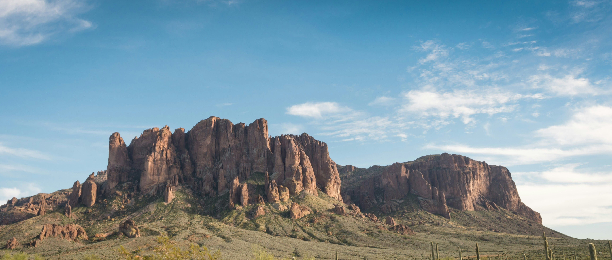
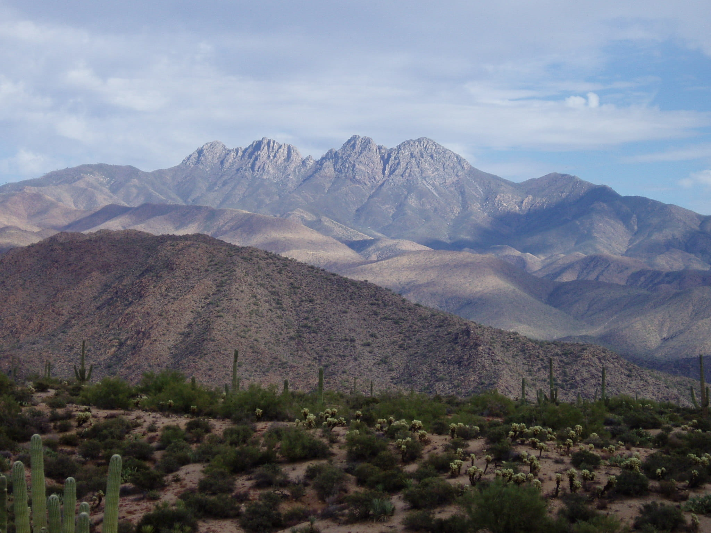

Mountains

Superstition Mountains
- Region(s): Sonoran Desert
- Tallest Peak: Superstition Mountain - 7,903 feet (2,409 m)
- Elevation: 5,059 ft (1,542 m)
- Prominence: 1,817 ft (554 m)
The Superstition range is located in the Sonoran desert. The highest peak is Superstition Mountain, which reaches 5,059 feet in elevation.

Mazatzal Mountains
- Region(s): Sonoran Desert, AZ/NM Mountains
- Tallest Peak: Mazatzal Peak - 7,903 feet (2,409 m)
- Elevation: 7,093 ft (1,542 m)
- Prominence: 1,000 ft (554 m)
The crest of the Mazatzals forms the county line between Maricopa County and Gila County. The Arizona 87 highway section south of Pine (basically Payson, which is where the 87 ends) is where the north Mazatzal Mountains merge into the western region of the Mogollon Rim, as the Rim continues northwest into the Oak Creek Canyon region (between Sedona and Flagstaff). The Mazatzal Range also features the prominent landmark, Four Peaks. The northernmost peak of the four is named Brown's Peak, which is also the tallest of the four, but still not as tall as Mazatzal Peak.